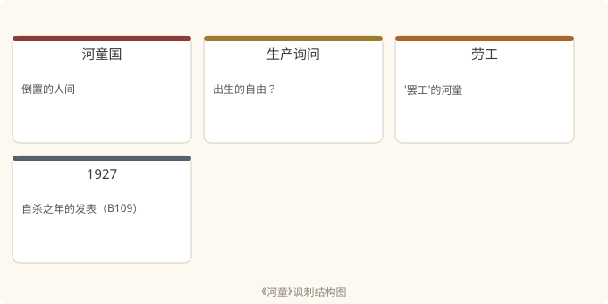

河童
一、基本信息
| 作者 | 芥川龙之介 |
|---|---|
| 成书/出版 | 1927年（作者页 B109 口径：河童（1927）） Ryunosuke Akutagawa — Encyclopaedia Britannica（百科全书） |
| 国别/地区 | 日本 |
| 时代 | 现当代 · 20世纪 |
| 体裁 | 中篇小说 |
| 语言 | 日语 |

《河童》讽刺结构图（主题·结构图）
二、创作背景
作者页（B109）：芥川 major_works 载'河童（1927）'——其自杀之年发表（B109 作者页定位，详见 luoshengmen 条核对）。
题材（通说待核）：精神病人讲述误入河童国的讽刺之旅——河童国的'生产'与' labor'反转。
三、内容脉络
河童国的讽刺：胎儿的'询问是否出生'、河童的劳动罢工（通说待核）。
四、主要人物表
| 人物 | 身份 | 说明 |
|---|---|---|
| 病人（第3号） | 叙述者 | （通说待核） |
五、主题与艺术特点
- 社会讽刺：劳工、宗教、艺术（通说）。
- 自杀的预演（通说待核——发表同年作者自尽）。
- 斯威夫特式游记传统（通说待核）。
六、影响与评论
- 作者页：芥川晚期讽刺之作（B109 作者页口径）。
Ryunosuke Akutagawa — Encyclopaedia Britannica（百科全书） - 对日本现代社会的全面讽刺（通说待核）。
Ryunosuke Akutagawa — Encyclopaedia Britannica（百科全书）
七、阅读建议
难点
- 河童国制度的映射。
- 讽刺的现实对应。
- 《河童》（收于《芥川龙之介全集》，通说待核）。
- 日文原版（公有领域渐近）。
对照《格列佛游记》。
八、待核实
- 1927年发表（《文艺春秋》7月说）核对。
- '第3号病人'框架待核。
- 讽刺对象对应表待核。
本页主要来源
相关作品：格列佛游记罗生门（芥川龙之介短篇小说选）一千零一夜
芥川龙之介的其他收录作品：罗生门（芥川龙之介短篇小说选）